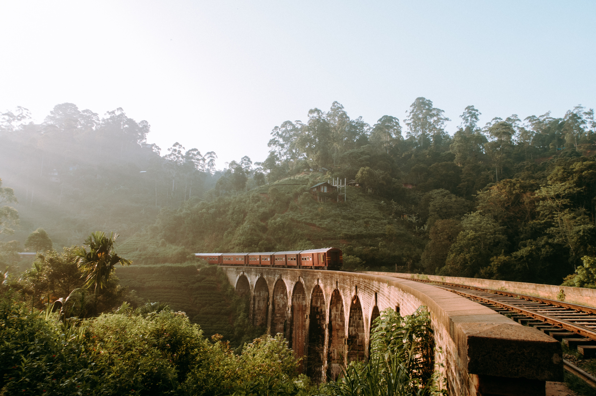
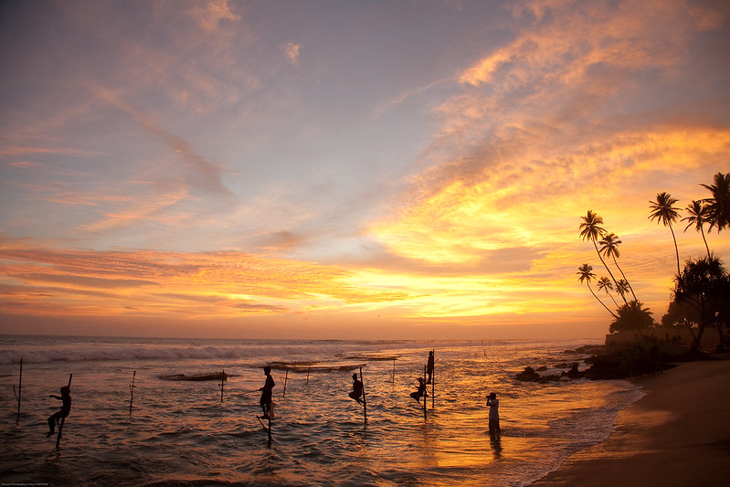

Although Sri Lanka is a small island country it has a vast range of climates, landscapes, and many natural wonders. For decades, Sri Lanka's famed beaches have attracted tourists. However, the island's tranquility offers many more exquisite views.
The crucial highlands are blanketed with emerald tea plantations, with waterfalls strewn . The misty landscapes, cool weather, and charming estate cottages harken back to a bygone period.

The cultural triangle in the centre of the island holds a positive magic with,
- ruins from numerous ancient kingdoms
- majestic tanks
- hidden rock caves
- historic sacred temples

The island's east coast is home to beautiful paddy fields, spectacular sunrises, and a slower, more rural lifestyle of people. Colorful places of worship, parks, ports and harbors, and crystal blue waterways give a relaxing experience for any traveler.
